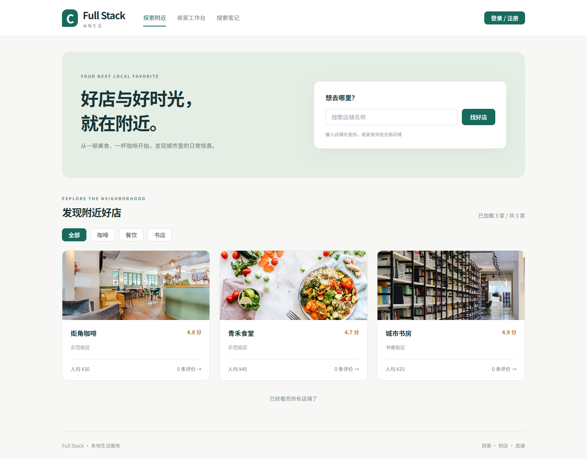

街角咖啡 · 梧桐路店
30 元到店代金券
- 购买价
- ¥19
- 示例库存
- 剩余 5 张
- 领券规则
- 限购 1 张
抢券时网络超时，重试会多建一笔订单吗？
本地生活交易平台
商家发券，顾客抢券后查订单进度，店员在授权门店核销。用一张街角咖啡券，看看三方怎样在同一笔订单上接力。
打开演示台浏览器内体验 · 合成数据 · 无需登录
街角咖啡 · 梧桐路店
抢券时网络超时，重试会多建一笔订单吗？
从抢券请求到门店履约，每一步都有自己的状态和记录。
先拿到受理编号。后台成单后，顾客才能查到待支付订单。
同一请求回到原受理记录。重复消息也不会多建订单或再次占库存。
授权店员在对应门店核验凭证。核销完成后，顾客和商家看到同一结果。
Go API 编排业务，MySQL 保存业务事实。缓存、异步任务和搜索各有清晰的职责。
每个示例都可以动手操作，观察状态、数据和失败后的结果。
重试同一请求或重复投递后，核对原受理编号、唯一订单和库存。还可验证旧的补偿任务不会释放新预占。
体验交易恢复多名访客复用同一篇笔记正文，各自的点赞状态与当前可见性仍独立读取。
体验 Feed 缓存更新索引可异步进行。搜索返回前向 MySQL 核对版本和公开状态，已隐藏笔记不会因索引滞后重新出现。
体验索引恢复关系和计数同事务提交。模拟暂停消费，再恢复处理，观察积压和对账结果。
体验点赞链路
单台 16 vCPU / 32 GiB，独立 PTS 内网发压，两轮各 180 秒。